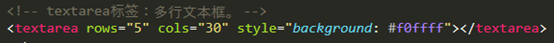
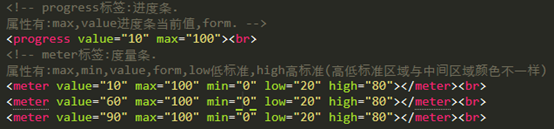

原文连接:https://www.cnblogs.com/chenJieLing/p/11607048.html
1.Form标签：用来将表单外的内容与表单进行关联。其主要元素有input,button,select。
action属性：指定表单的发送地址。
Novalidate属性：数据提交时不校验。
Target属性：指定在何处打开指定的url。
method属性：表单数据发送至服务器的方法，默认属性就是get。常用的有：get和post。
Get：数据会附在网址之后主动提交给服务器。
Post：数据不会附在网址后，会将数据打包发送给服务器，等候服务器来读取数据。
2.Input标签：
Type属性：指定输入内容的类型，默认是text单行文本框。其他类型：
①Text，Password，checkbox（checked设置默认值），radio（checked设置默认值，且必须将同一组单选项设置一个相同的name）。
②submit，reset，button。
③image（图片式提交按钮），hidden（隐藏字段）。
④email（邮箱- -会校验），tel（电话- - 不会校验），url（一个网址- -会校验）。
⑤number（配合max/min/step/value规定最大值/最小值/步长/默认值）；
range（同number。也是表示一定范围的数值输入，但是是以活动条的状态显示）。
⑥color（建立一个颜色的选择输入框）;
时间类（datetime-local,date,month,week,time）。
⑦Search（建立一个搜索框，供用户输入搜索的关键词）；
File（创建一个文件选取的输入框，可通过accept属性规定选取文件的类型。Multipe可以设定一次允许选择多个文件。）
Name属性：输入内容的识别名称，传递参数时的参数名称。
Value属性：默认值。
Size属性：可以使文本框变长。
Maxlength属性：输入的最大字数。
Readonly属性：只读属性，设置的内容不可变更。
Disabled属性：设置为不可用（不可操作）。
Required属性：设置该内容为必须填写项，否则无法提交。
Placeholder属性：当文本框活得焦点时被清空。
Autocomplet属性：属性值为on/off，定义是否开启浏览器自动记忆功能。
autofocus属性：自动获得焦点。
Accesskey属性：指定快捷键（指定快捷键后，按alt+快捷键便可以自动或得焦点。）
Tabindex属性：指定按tab键时，项目间的移动顺序。
3.button标签：与input标签建立的按钮相同（在form中尽量用input，其他地方可以用button）
Type属性：值有submit、reset、button
Name/value/disable属性：同input
Autofocus属性：按钮自动获得焦点
Form属性：设定按钮属于哪个表单
Formmethod属性：谁当表单提交方式，将覆盖之前的提交方式
Formnovalidate属性：
Formaction属性：指定表单发送的对象url
Formenctype属性：指定表单数据发送类型
Formtarget属性：
4.Select标签和datalist标签：
5.Label标签：作用是点标签上的字也能选中复选框。

6.optgroup标签：作用是分组。
7.textarea标签：多行文本框。

8. output标签：for元素定义输出域相关的元素。
oninput表单事件：当用户对元素数据输入的时候触发。
parseInt()函数：解析字符串，返回一个整数。
9. progress标签：进度条。属性有:max,value进度条当前值,form。
meter标签：度量条。属性有:max,min,value,form,low低标准,high高标准(高低标准区域与中间区域颜色不一样)。

10. fieldset标签：将表单内相关元素分组，通常会有一个边框。
legend标签：为fieldset定义一个标题。
11. keygen标签：建立一个密钥生成器，当提交表单时，私钥存储在本地，公钥发送到服务器，主要作用是提供一种用户验证身份的方法。
①属性有：name,form,autofocus,disabled.
②challenge属性：将keygen的值设置在提交时间。
③keytype属性：定义密钥类型，如RSA密钥。
12. pattern属性：设定输入类型的正则表达式。
13.details标签：用于描述文档的细节。open属性规定页面上的details是可见的。
summary标签：为details定义标题，用户点击标题时，会显示出details中的内容。